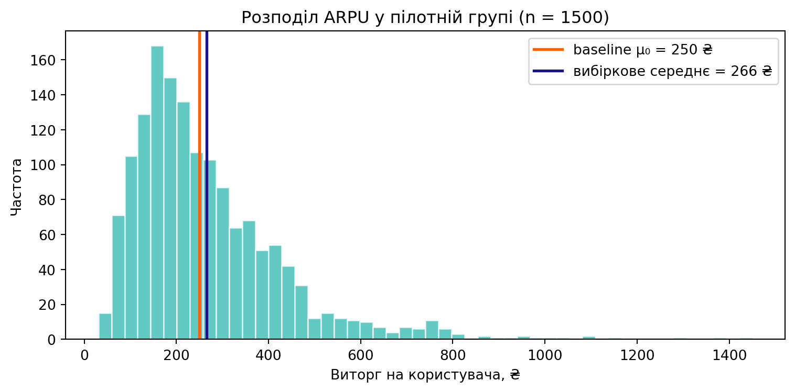
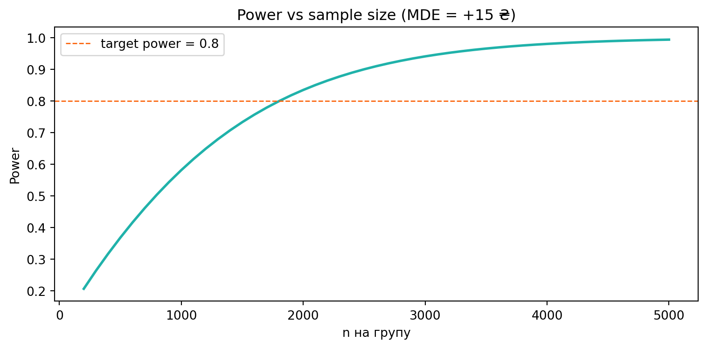
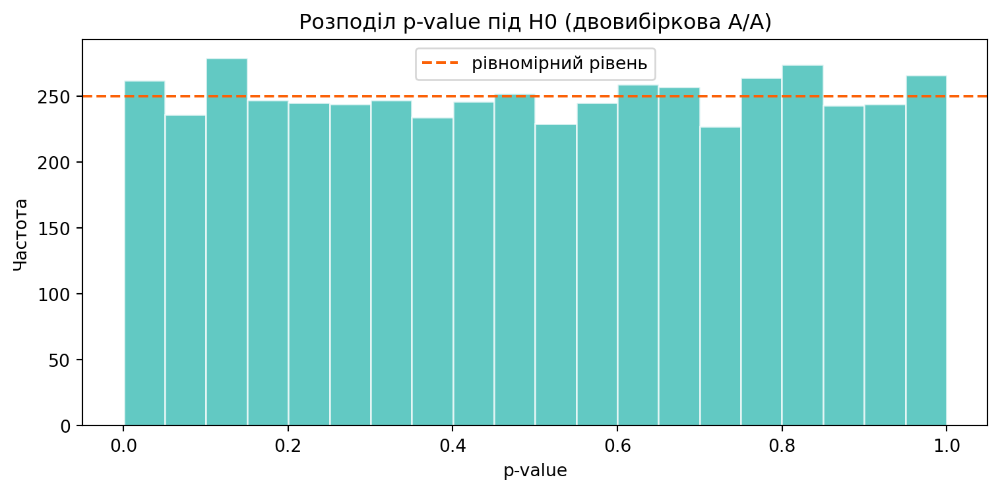

На лекції ми по черзі побудували \(t\)-тест: побачили проблему невідомої \(\sigma^2\), замінили її оцінкою \(S^2\), з’ясували, що тоді статистика \(T(X)\) має не нормальний, а розподіл Стьюдента\(t_{n-1}\); розібрали \(t'\)-тест проти \(t\)-тесту, довірчий інтервал, велику вибірку через ЦГТ + теорему Слуцького, двовибірковий \(t\)-тест і MDE.
Сьогодні збираємо все в один інструмент — власну функцію my_t_test(), а потім її «двовибіркового близнюка» my_two_sample_t_test(), схожого за духом на scipy.stats.ttest_ind.
ПриміткаПравила гри
Не використовуємо готові ttest_1samp / ttest_ind — пишемо все самі через scipy.stats.t (t.cdf, t.sf, t.ppf). Готова функція — лише для перевірки.
Кожна версія — це маленьке розширення попередньої.
Кожен фінальний крок (Final, повний цикл) перевикористовує попередні функції, а не дублює їх.
Після кожної версії — блок «Ваша черга» з мінізадачею.
1 Кейс: ARPU застосунку доставки GreenBowl
Працюємо над тим самим GreenBowl, що й у Практиці 3, але тепер метрика неперервна. Продуктова команда оновила меню (додала комбо-набори) і хоче зрозуміти, чи зріс середній виторг на користувача за тиждень (ARPU).
Одиниця спостереження: один користувач за тиждень.
Метрика успіху: виторг користувача в гривнях — неперервна, додатна, сильно скошена (більшість користувачів роблять невеликі замовлення, мало «китів» дають довгий правий хвіст).
Базовий рівень:\(\mu_0 = 250\) ₴ (3 місяці історичних даних).
Точка окупності (breakeven):+5 ₴. Нижче цього додатковий виторг не покриває вартості перебудови меню та логістики — фіча працює «в мінус». Це поріг рішення ship/no-ship.
Design-MDE:+15 ₴. Найменший ефект, який ми вважаємо «явною перемогою» і під який плануємо розмір вибірки (хочемо \(\geq 80\%\) шанс його зловити). Це поріг планування, а не рішення.
Напрям: нас цікавить лише ефект «вгору» → однобічний тест.
Рівень значущості:\(\alpha = 0{,}05\).
ВажливоЧому це ДВА різні числа (а не одне)
Спокуса — узяти одне число «15» і на ньому ж планувати вибірку й приймати рішення. Це пастка: планування і рішення відповідають на різні питання й коштують по-різному.
breakeven (+5) каже, коли фіча окупна — це економіка (вартість перебудови ÷ база користувачів). Рішення ship приймаємо відносно нього.
design-MDE (+15) каже, який ефект ми хочемо впевнено зловити — під нього рахуємо \(N\). Менший ефект ловити дорожче (\(n \propto
1/\text{ефект}^2\)), тож ресурси кладемо на «явну перемогу».
Якщо змішати ролі — наприклад, вимагати, щоб нижня межа CI перетнула +15, — ви відхилятимете фічі, які насправді окупні (ефект між +5 і +15). До цієї помилки ми ще повернемось у фіналі.
ПриміткаЧому \(t\)-тест, а не \(Z\)-тест?
У Практиці 3 метрика була пропорцією, і дисперсія була «самоописова»: \(\sigma^2 = \mu_0(1-\mu_0)\). Тут метрика — гроші, і дисперсію нізвідки взяти наперед: її доводиться оцінювати з даних як \(S^2\). Саме ця заміна \(\sigma^2 \to S^2\) і перетворює \(Z\)-тест на \(t\)-тест.
Згенеруємо реалістичний скошений ARPU. Розподіл — логнормальний (класична модель для «грошей на користувача»):
def arpu_sample(true_mean, n, sigma=0.6):"""Логнормальна вибірка ARPU із заданим середнім true_mean.""" mu = np.log(true_mean) - sigma**2/2return np.random.lognormal(mean=mu, sigma=sigma, size=n)np.random.seed(73)pilot = arpu_sample(true_mean=268, n=1500) # пілот після оновлення менюfig, ax = plt.subplots(figsize=(8, 4))ax.hist(pilot, bins=50, color=turquoise, alpha=0.7, edgecolor="white")ax.axvline(250, color=red, lw=2, label="baseline μ₀ = 250 ₴")ax.axvline(pilot.mean(), color=blue, lw=2, label=f"вибіркове середнє = {pilot.mean():.0f} ₴")ax.set_xlabel("Виторг на користувача, ₴")ax.set_ylabel("Частота")ax.set_title("Розподіл ARPU у пілотній групі (n = 1500)")ax.legend()plt.tight_layout()plt.show()print(f"Середнє = {pilot.mean():.1f} ₴, S = {pilot.std(ddof=1):.1f} ₴, n = {len(pilot)}")

Середнє = 265.9 ₴, S = 166.8 ₴, n = 1500
Розподіл явно не нормальний — скошений праворуч. Тримаймо це в голові: воно стане критичним у Версії 3.
2 Версія 1 — \(t\)-статистика і p-value
Найпростіша версія: дано вибірку та \(\mu_0\). Повертаємо однобічний \(p\)-value для \(H_1: \mu > \mu_0\).
\[
T = \sqrt{n}\,\dfrac{\overline X - \mu_0}{S},\qquad
T \overset{H_0}{\sim} t_{n-1},\qquad
p\text{-value} = 1 - F_{t_{n-1}}(T)
\]
\(p \ll 0{,}05\) — є вагомі докази, що ARPU зріс понад історичні 250 ₴. Але не поспішаймо радіти — спершу подивимось на розмір ефекту (Версія 4) і чи він вартий грошей (бізнес-MDE = +15 ₴).
ПорадаВаша черга 1
Згенеруйте серію пілотів зі справжнім середнім рівно \(\mu_0 = 250\) (тобто ефекту немає) і подивіться, які \(p\)-value виходять. Чи часто \(p \leq 0{,}05\)?
Зафіксуйте np.random.seed(1) і знайдіть, при якому вибірковому середньому (на \(n=1500\), \(S \approx 165\)) \(p\) перетинає \(0{,}05\). Переведіть це у lift над \(\mu_0\).
Дослідницьке. Збільште \(n\) учетверо (1500 → 6000). У скільки разів зменшується критичний lift — учетверо чи у \(\sqrt 4 = 2\)? Чому?
ПриміткаРозв’язання 1
# (1) ефекту немає — p має бути приблизно рівномірним; p<=0.05 ~ у 5% випадківnp.random.seed(1)ps = [my_t_test(arpu_sample(250, 1500), 250) for _ inrange(2000)]print(f"Частка p <= 0.05 при відсутності ефекту: {np.mean(np.array(ps) <=0.05):.3f}")# (2) критичний lift: T = z* => mean = mu0 + t_crit * S/sqrt(n)n, S =1500, 165t_crit = stats.t.ppf(0.95, df=n -1)crit_mean =250+ t_crit * S / np.sqrt(n)print(f"Критичне середнє ≈ {crit_mean:.2f} ₴ → lift ≈ {crit_mean -250:+.2f} ₴")# (3) учетверо більший ncrit_mean_4n =250+ t_crit * S / np.sqrt(4* n)print(f"При n=6000: критичний lift ≈ {crit_mean_4n -250:+.2f} ₴ "f"(зменшився у {(crit_mean-250)/(crit_mean_4n-250):.1f} рази)")
Частка p <= 0.05 при відсутності ефекту: 0.043
Критичне середнє ≈ 257.01 ₴ → lift ≈ +7.01 ₴
При n=6000: критичний lift ≈ +3.51 ₴ (зменшився у 2.0 рази)
Інтерпретація. Критичний lift масштабується як \(1/\sqrt{n}\), бо \(SE = S/\sqrt{n}\). Тому при збільшенні \(n\) у 4 рази критичний lift падає у 2 рази, а не в 4. Це той самий компроміс точності й вартості, що й у Практиці 3.
3 Версія 2 — три варіанти альтернативи
Маркетинг хоче ловити падіння ARPU (одне-бічний less), фінансовий відділ іноді хоче «чи змінилось узагалі» (двобічний). Додаємо параметр alternative.
def my_t_test(sample, mu0, alternative="greater"):"""Версія 2. Додає параметр alternative ∈ {greater, less, two-sided}.""" sample = np.asarray(sample, dtype=float) n =len(sample) df = n -1 se = sample.std(ddof=1) / np.sqrt(n) t_stat = (sample.mean() - mu0) / seif alternative =="greater":return stats.t.sf(t_stat, df=df)if alternative =="less":return stats.t.cdf(t_stat, df=df)if alternative =="two-sided":return2* stats.t.sf(abs(t_stat), df=df)raiseValueError(f"Невідома альтернатива: {alternative!r}")
for alt in ("greater", "less", "two-sided"): p = my_t_test(pilot, mu0=250, alternative=alt)print(f"alternative={alt:>10s} → p-value = {p:.5f}")
Як і для \(Z\)-тесту: однобічний \(p\)-value дорівнює половині двобічного — бо розподіл Стьюдента симетричний навколо нуля. Це наслідок формули \(2\cdot(1 - F_t(|T|))\).
ПорадаВаша черга 2
Переконайтесь, що на пілоті p_two_sided == 2 · p_greaterточно.
Згенеруйте вибірку, де \(\overline X < \mu_0\) (наприклад, arpu_sample(235, 1500)). Чи зберігається рівність із p_greater? Спробуйте 2 · p_less.
Виведіть загальну формулу\(p_{\text{two}}\) через \(p_{\text{greater}}\) і \(p_{\text{less}}\).
Загальна формула:\(p_{\text{two-sided}} = 2 \cdot \min(p_{\text{greater}},\ p_{\text{less}})\). Беремо завжди той хвіст, у якому спостереження «більш екстремальне». На відміну від біномного у Практиці 3, тут рівність точна для будь-якого напрямку — розподіл \(t\) симетричний.
4 Версія 3 — \(t'\)-тест проти \(t\)-тесту (use_normal)
На лекції ми побачили: якщо замість \(t_{n-1}\) взяти \(\mathcal{N}(0,1)\) (це й є \(t'\)-тест), то на малій вибірці результат спотворюється. Додаємо прапор use_normal і перевіряємо симуляцією.
def my_t_test(sample, mu0, alternative="greater", use_normal=False):"""Версія 3. use_normal=True → t'-тест (квантилі N(0,1) замість t).""" sample = np.asarray(sample, dtype=float) n =len(sample) df = n -1 se = sample.std(ddof=1) / np.sqrt(n) t_stat = (sample.mean() - mu0) / se dist = stats.norm if use_normal else stats.t kw = {} if use_normal else {"df": df}if alternative =="greater":return dist.sf(t_stat, **kw)if alternative =="less":return dist.cdf(t_stat, **kw)if alternative =="two-sided":return2* dist.sf(abs(t_stat), **kw)raiseValueError(f"Невідома альтернатива: {alternative!r}")
Головне питання: наскільки часто кожен критерій хибно відхиляє \(H_0\), коли ефекту насправді немає (FPR). Симулюємо під \(H_0\) (справжнє середнє \(= \mu_0\)) для різних розподілів і розмірів вибірки.
дані n t-FPR t′-FPR
нормальні 15 0.050 0.061
скошені 15 0.017 0.024
скошені 200 0.035 0.036
скошені 1000 0.040 0.041
ПопередженняЩо показує таблиця
Нормальні дані, \(n=15\):\(t\)-тест б’є рівно \(0{,}05\) (точний!), а \(t'\)-тест роздуває FPR до \(\approx 0{,}06\) — «знаходить» ефекти частіше, ніж дозволено. Це і є причина, чому \(t\)-тест безпечніший на малих вибірках.
Скошені дані, \(n=15\):обидва критерії збиті (тут навпаки — надто консервативні в правому хвості). Малий \(n\) + ненормальність = тесту вірити не можна, який би квантиль ви не взяли.
Скошені дані, \(n \uparrow\): FPR обох наближається до \(0{,}05\). Це ЦГТ + теорема Слуцького в дії: на великій вибірці \(T(X)\) стає нормальним навіть для скошених даних, і різниця \(t\) vs \(t'\) зникає.
ПриміткаВисновок (як на лекції)
\(t\)-тест ніколи не «оптимістичніший» за \(t'\)-тест: важчі хвости \(t_{n-1}\) дають більший \(p\)-value → менший FPR. Тому дефолт — завжди \(t\)-тест. Але жоден із них не рятує від ненормальності на малій вибірці — там потрібен або великий \(n\), або непараметричні методи (бутстреп, тест Манна–Вітні).
ПорадаВаша черга 3
Для нормальних даних знайдіть мінімальне \(n\), при якому \(|t\text{-FPR} - t'\text{-FPR}| < 0{,}005\). Із якого \(n\) вибір \(t\) vs \(t'\) перестає мати значення?
Повторіть симуляцію для двобічного тесту. Чи зберігається ефект «\(t'\) роздуває FPR» на нормальних даних?
Дослідницьке. Підсильте скошеність (sigma=1.0 у arpu_sample). Скільки тепер треба \(n\), щоб скошений FPR дотягнувся до \(0{,}05\)? Як це пов’язано з «достатнім \(n\)» для ЦГТ із лекції про \(Z\)-тест?
ПриміткаРозв’язання 3
# (1) на нормальних даних різниця t vs t' зникає зі зростанням nprint("Нормальні дані, |t-FPR − t′-FPR|:")for n in (15, 30, 60, 120, 250): a, b = fpr(normal_gen, n, M=20000)print(f" n={n:>4d} t={a:.3f} t′={b:.3f} |Δ|={abs(a-b):.3f}")
Уже з \(n \approx 60\) різниця падає нижче \(0{,}005\): \(t_{59} \approx
\mathcal{N}(0,1)\), тож на нормальних даних вибір квантиля стає косметикою (як і казали на лекції).
Двобічний веде себе так само — \(t'\) систематично трохи ліберальніший на малих \(n\).
Що скошеніший розподіл, то більший\(n\) потрібен ЦГТ. При sigma=1.0 навіть \(n=1000\) може не дотягнути FPR до \(0{,}05\) — це та сама ідея «достатнього \(n\)» з лекції про \(Z\)-тест: чим важчий хвіст, то повільніша збіжність до нормальності.
5 Версія 4 — довірчий інтервал для \(\mu\)
Замість «так/ні» бізнес хоче діапазон для справжнього ARPU. Використовуємо \(t\)-квантиль:
\[
\overline X \pm t_{n-1,\,1-\alpha/2}\,\dfrac{S}{\sqrt n}
\]
def my_t_test(sample, mu0, alternative="greater", use_normal=False, alpha=0.05, conf_int=False):""" Версія 4. conf_int=True → повертає dict із p-value і CI. Тип CI узгоджується з alternative (той самий бюджет α): two-sided → [X̄ − t·SE, X̄ + t·SE] greater → одностороння нижня межа: [X̄ − t·SE, +∞) less → одностороння верхня межа: (−∞, X̄ + t·SE] """ sample = np.asarray(sample, dtype=float) n =len(sample) df = n -1 mean = sample.mean() se = sample.std(ddof=1) / np.sqrt(n) t_stat = (mean - mu0) / se dist = stats.norm if use_normal else stats.t kw = {} if use_normal else {"df": df}if alternative =="greater": p_value = dist.sf(t_stat, **kw)elif alternative =="less": p_value = dist.cdf(t_stat, **kw)elif alternative =="two-sided": p_value =2* dist.sf(abs(t_stat), **kw)else:raiseValueError(f"Невідома альтернатива: {alternative!r}")ifnot conf_int:return p_valueif alternative =="two-sided": crit = dist.ppf(1- alpha /2, **kw) ci_low = mean - crit * se ci_high = mean + crit * seelif alternative =="greater": crit = dist.ppf(1- alpha, **kw) ci_low = mean - crit * se ci_high = np.infelse: # less crit = dist.ppf(1- alpha, **kw) ci_low =-np.inf ci_high = mean + crit * sereturn {"mean": mean, "t_stat": t_stat, "df": df,"p_value": p_value, "ci_low": ci_low, "ci_high": ci_high}
Двосторонній CI описує невизначеність в обидва боки — для звіту.
Одностороння нижня межа каже: «ARPU щонайменше стільки з упевненістю 95%». Якщо вона вище порога окупності \(\mu_0 +
\text{breakeven} = 255\) ₴ — це сигнал на користь ship, але сам по собі лише необхідна, не достатня умова. Повне рішення ship/no-ship (тризонне правило + очікувана цінність) зберемо у фіналі.
ПорадаВаша черга 4
Запустіть my_t_test(pilot, 250, "less", conf_int=True). Як виглядає CI і чи має він сенс для цих даних?
Порівняйте ширину одностороннього та двостороннього 95% CI. Який тісніший і чому?
Дослідницьке. Порівняйте \(t\)-CI (use_normal=False) із \(t'\)-CI (use_normal=True) на пілоті (\(n=1500\)) і на підвибірці \(n=12\). Де різниця помітна, а де ні?
ПриміткаРозв’язання 4
# (1)+(2)r_less = my_t_test(pilot, 250, "less", conf_int=True)print(f"alt='less': μ ≤ {r_less['ci_high']:.1f} ₴ (дані тягнуть угору — межа малоінформативна)")w_two = res_two['ci_high'] - res_two['ci_low']w_one = res_two['ci_high'] - res_one['ci_low'] # для порівняння нижніх межprint(f"Двостороння нижня межа = {res_two['ci_low']:.1f}, одностороння = {res_one['ci_low']:.1f}")print("Одностороння тісніша: весь α=0.05 йде в один хвіст (t_{0.95} < t_{0.975}).")# (3) t-CI vs t'-CIfor n in (1500, 12): sub = pilot[:n] a = my_t_test(sub, 250, "two-sided", use_normal=False, conf_int=True) b = my_t_test(sub, 250, "two-sided", use_normal=True, conf_int=True)print(f"n={n:>4d}: t-CI ширина={a['ci_high']-a['ci_low']:6.1f}, "f"t′-CI ширина={b['ci_high']-b['ci_low']:6.1f}")
Інтерпретація. При \(n=1500\)\(t\)- і \(t'\)-інтервали майже однакові (\(t_{1499}\approx\mathcal N(0,1)\)). При \(n=12\)\(t'\)-інтервал помітно вужчий — але це хибна впевненість: він ігнорує невизначеність оцінки \(S\), тому реальне покриття нижче за заявлені 95%.
Від однієї вибірки до двох
my_t_test працює, коли є фіксований baseline — наприклад, порівняння поточного тижня з історичним ARPU. Але чесний A/B-тест запускає дві когорти одночасно, і обидві мають шум та свою дисперсію.
Створюємо паралельну функцію my_two_sample_t_test. Стара функція не зникає — вона лишається для baseline-моніторингу.
6 Версія 5 — двовибірковий \(t\)-тест (Welch + pooled)
На лекції було дві формули залежно від рівності дисперсій. Welch (не припускає \(\sigma^2_A = \sigma^2_B\)) — безпечний дефолт:
\[
T = \dfrac{\overline A - \overline B}{\sqrt{S^2_A/n_A + S^2_B/n_B}},\qquad
\nu = \dfrac{\left(S^2_A/n_A + S^2_B/n_B\right)^2}
{\dfrac{(S^2_A/n_A)^2}{n_A-1} + \dfrac{(S^2_B/n_B)^2}{n_B-1}}
\]
def my_two_sample_t_test(a, b, alternative="two-sided", equal_var=False, alpha=0.05, conf_int=False):""" Двовибірковий t-тест на різницю середніх. Конвенція: T = (Ā − B̄)/SE; alternative щодо a − b. equal_var=False → Welch (дефолт); True → pooled (рівні дисперсії). """ a = np.asarray(a, dtype=float) b = np.asarray(b, dtype=float) na, nb =len(a), len(b) ma, mb = a.mean(), b.mean() va, vb = a.var(ddof=1), b.var(ddof=1) diff = ma - mbif equal_var: sp2 = ((na -1) * va + (nb -1) * vb) / (na + nb -2) se = np.sqrt(sp2 * (1/ na +1/ nb)) df = na + nb -2else: se = np.sqrt(va / na + vb / nb) df = (va / na + vb / nb) **2/ ( (va / na) **2/ (na -1) + (vb / nb) **2/ (nb -1)) t_stat = diff / seif alternative =="greater": p_value = stats.t.sf(t_stat, df=df)elif alternative =="less": p_value = stats.t.cdf(t_stat, df=df)elif alternative =="two-sided": p_value =2* stats.t.sf(abs(t_stat), df=df)else:raiseValueError(f"Невідома альтернатива: {alternative!r}")ifnot conf_int:return p_valueif alternative =="two-sided": crit = stats.t.ppf(1- alpha /2, df=df) ci_low, ci_high = diff - crit * se, diff + crit * seelif alternative =="greater": crit = stats.t.ppf(1- alpha, df=df) ci_low, ci_high = diff - crit * se, np.infelse: # less crit = stats.t.ppf(1- alpha, df=df) ci_low, ci_high =-np.inf, diff + crit * sereturn {"diff": diff, "se": se, "t_stat": t_stat, "df": df,"p_value": p_value, "ci_low": ci_low, "ci_high": ci_high}
6.1 Демо: чесний A/B GreenBowl
Control — старе меню, Test — нове. Свідомо беремо ефект на межі бізнес-MDE, щоб отримати реальну дилему ship/no-ship.
np.random.seed(2026)control = arpu_sample(250, 2500) # старе менюtest = arpu_sample(264, 2500) # нове меню# Конвенція: a = test, b = control → "greater" означає test > controlres = my_two_sample_t_test(test, control, alternative="greater", equal_var=False, conf_int=True)print(f"ARPU control = {control.mean():.1f} ₴")print(f"ARPU test = {test.mean():.1f} ₴")print(f"lift = {res['diff']:+.1f} ₴ (Welch df = {res['df']:.0f})")print(f"t = {res['t_stat']:.3f}, p-value = {res['p_value']:.5f}")print(f"95% одностороння нижня межа для lift: ≥ {res['ci_low']:+.2f} ₴")
ARPU control = 259.6 ₴
ARPU test = 271.4 ₴
lift = +11.8 ₴ (Welch df = 4997)
t = 2.311, p-value = 0.01043
95% одностороння нижня межа для lift: ≥ +3.41 ₴
Lift ≈ +12 ₴ — вище точки окупності +5 ₴; але одностороння нижня межа ≈ +3 ₴ — нижче окупності.
PM-дилема (сіра зона): точкова оцінка окупна, та ми не впевнені — істинний lift може виявитися й +3 ₴, нижче окупності. Порівнюємо з окупністю +5, а не з design-MDE +15: тож це не «ефект замалий», а чесне «ймовірно окупно, але CI ще накриває breakeven». Рішення: зібрати ще даних (скільки саме — порахує my_ab_report) або свідомо взяти ризик. Кількісну відповідь «наскільки ймовірно окупно» дамо у фіналі через \(P(\text{ефект} \geq \text{breakeven})\).
6.2 Cross-check з scipy
ref = stats.ttest_ind(test, control, alternative="greater", equal_var=False)print(f"scipy: t = {ref.statistic:.4f}, p = {ref.pvalue:.5f}")print(f"мій код: t = {res['t_stat']:.4f}, p = {res['p_value']:.5f}")
scipy: t = 2.3112, p = 0.01043
мій код: t = 2.3112, p = 0.01043
Числа збігаються — реалізація коректна.
6.3 Welch проти pooled
# Штучно: маленька група з великою дисперсією + велика з малоюnp.random.seed(11)small_hi_var = arpu_sample(260, 60, sigma=0.9) # n=60, розкид великийbig_lo_var = arpu_sample(250, 3000, sigma=0.3) # n=3000, розкид малийp_welch = my_two_sample_t_test(small_hi_var, big_lo_var, "two-sided", equal_var=False)p_pooled = my_two_sample_t_test(small_hi_var, big_lo_var, "two-sided", equal_var=True)df_welch = my_two_sample_t_test(small_hi_var, big_lo_var, "two-sided", equal_var=False, conf_int=True)["df"]print(f"Welch: p = {p_welch:.4f} (df ≈ {df_welch:.0f})")print(f"pooled: p = {p_pooled:.4f} (df = {len(small_hi_var)+len(big_lo_var)-2})")
Welch: p = 0.3732 (df ≈ 59)
pooled: p = 0.0453 (df = 3058)
ПриміткаЧому дефолт — Welch
Коли дисперсії та розміри груп різні, pooled-формула занижує\(SE\) і дає завищену впевненість (менший \(p\)). Welch автоматично «штрафує» ступені свободи (тут \(df\) падає з ~3058 до кількох десятків) і захищає від хибно-позитивного. Pooled виправданий лише коли є вагомі підстави вважати дисперсії рівними.
ПорадаВаша черга 5
На демо-A/B порівняйте Welch і pooled. Тут розміри груп рівні (\(n_A = n_B = 2500\)) — наскільки близькі \(p\)-value? Чому при рівних \(n\) різниця мала навіть за нерівних дисперсій?
Зменшіть тестову групу до \(n=200\) при тому самому lift. Як змінюються \(p\)-value і Welch-\(df\)?
Дослідницьке. Побудуйте Welch-\(df\) як функцію відношення дисперсій \(S^2_A/S^2_B \in [0{,}1,\ 10]\) при фіксованих \(n_A=n_B=500\). Коли \(df\) мінімальний?
ПриміткаРозв’язання 5
# (1) рівні n: Welch ≈ pooledpw = my_two_sample_t_test(test, control, "greater", equal_var=False)pp = my_two_sample_t_test(test, control, "greater", equal_var=True)print(f"Рівні n=2500: Welch p={pw:.5f}, pooled p={pp:.5f} → майже однакові")# (2) маленька тестова групаnp.random.seed(99)test_small = arpu_sample(264, 200)r = my_two_sample_t_test(test_small, control, "greater", equal_var=False, conf_int=True)print(f"n_test=200: lift={r['diff']:+.1f}, p={r['p_value']:.4f}, Welch df={r['df']:.0f}")# (3) Welch df vs відношення дисперсійprint("\nS²_A/S²_B → Welch df (n_A=n_B=500):")for ratio in (0.1, 0.5, 1, 2, 10): va, vb, n = ratio, 1.0, 500 df = (va/n + vb/n)**2/ ((va/n)**2/(n-1) + (vb/n)**2/(n-1))print(f" {ratio:>4} → df ≈ {df:.0f}")
При рівних\(n\) Welch і pooled майже збігаються: розбіжність формул проявляється переважно за нерівних розмірів груп. Тому в класичному 50/50 A/B різниця мінімальна.
Менша тестова група → ширший \(SE\), більший \(p\), менший Welch-\(df\) (точність визначає менша група — як і unbalanced-ефект у Практиці 3).
Welch-\(df\)максимальний при рівних дисперсіях (\(\approx n_A+n_B-2\)) і падає, коли одна дисперсія домінує. Це і є «штраф» за гетероскедастичність.
7 Версія 6 — потужність і планування вибірки
Для планування використовуємо нормальне наближення (як на лекції — велика вибірка). Для двовибіркового тесту з рівними \(n\) і близькими дисперсіями \(SE_{\text{diff}} \approx S\sqrt{2/n}\).
def my_two_sample_t_power(mean_diff, sd, n, alpha=0.05, alternative="greater"):"""Потужність двовибіркового t-тесту (нормальне наближення, рівні n).""" se = sd * np.sqrt(2/ n)if alternative in ("greater", "less"): z_a = stats.norm.ppf(1- alpha)return stats.norm.cdf(abs(mean_diff) / se - z_a)if alternative =="two-sided": z_a = stats.norm.ppf(1- alpha /2)return (stats.norm.cdf(mean_diff / se - z_a) + stats.norm.cdf(-mean_diff / se - z_a))raiseValueError(f"Невідома альтернатива: {alternative!r}")def plan_t_experiment(sd, mde, alpha=0.05, target_power=0.8, alternative="greater", n_lo=5, n_hi=1_000_000):"""Скільки користувачів на групу треба для детекції ефекту mde. Bisection."""if my_two_sample_t_power(mde, sd, n_hi, alpha, alternative) < target_power:returnNonewhile n_hi - n_lo >1: n_mid = (n_lo + n_hi) //2if my_two_sample_t_power(mde, sd, n_mid, alpha, alternative) >= target_power: n_hi = n_midelse: n_lo = n_midreturn n_hi
# Оцінку S беремо з зібраних даних A/Bsd_hat = np.concatenate([control, test]).std(ddof=1)print(f"S ≈ {sd_hat:.1f} ₴\n")# Сценарій A: маркетинг гарантує N на групу. Що задетектимо?for n in (500, 1000, 2500, 5000): pw = my_two_sample_t_power(15, sd_hat, n, alternative="greater")print(f"n = {n:>5d} → power(MDE=+15 ₴) = {pw:.3f}")# Сценарій B: скільки треба, щоб задетектити +15 ₴ з power=0.8N = plan_t_experiment(sd_hat, mde=15, target_power=0.8, alternative="greater")print(f"\nДля детекції +15 ₴ з power=0.8 потрібно: {N} користувачів на групу")
S ≈ 181.2 ₴
n = 500 → power(MDE=+15 ₴) = 0.368
n = 1000 → power(MDE=+15 ₴) = 0.582
n = 2500 → power(MDE=+15 ₴) = 0.900
n = 5000 → power(MDE=+15 ₴) = 0.994
Для детекції +15 ₴ з power=0.8 потрібно: 1805 користувачів на групу
ВажливоКлючовий trade-off
Із формули видно: \(\text{MDE} \propto 1/\sqrt{n}\), тож \(n \propto
1/\text{MDE}^2\). Захотіти вдвічі менший ефект — це вчетверо більше користувачів і час очікування.
ПорадаВаша черга 6
Побудуйте графік power vs \(n\) (від 200 до 5000 на групу) для MDE = +15 ₴. Знайдіть мінімальне \(n\), де power \(\geq 0{,}8\), і звірте з plan_t_experiment.
Звірте plan_t_experiment із закритою формулою для \(n\). Чи bisection взагалі потрібен?
Дослідницьке. Як зміниться \(N\), якщо MDE зменшити удвічі (15 → 7,5 ₴)? У 2, 4 чи 8 разів?
ПриміткаРозв’язання 6
ns = np.arange(200, 5001, 100)powers = [my_two_sample_t_power(15, sd_hat, n, alternative="greater") for n in ns]fig, ax = plt.subplots(figsize=(8, 4))ax.plot(ns, powers, color=turquoise, lw=2)ax.axhline(0.80, color=red, linestyle="--", lw=1, label="target power = 0.8")ax.set_xlabel("n на групу")ax.set_ylabel("Power")ax.set_title("Power vs sample size (MDE = +15 ₴)")ax.legend()plt.tight_layout()plt.show()n_bisect = plan_t_experiment(sd_hat, mde=15, target_power=0.8, alternative="greater")z = stats.norm.ppf(0.95) + stats.norm.ppf(0.80)n_formula = z**2*2* sd_hat**2/15**2print(f"Bisection: n = {n_bisect}")print(f"Формула: n ≈ {n_formula:.0f}")n_half = plan_t_experiment(sd_hat, mde=7.5, target_power=0.8, alternative="greater")print(f"\nMDE=+15 ₴: n={n_bisect}; MDE=+7.5 ₴: n={n_half} → x{n_half/n_bisect:.1f}")

Bisection: n = 1805
Формула: n ≈ 1804
MDE=+15 ₴: n=1805; MDE=+7.5 ₴: n=7217 → x4.0
Інтерпретація. Bisection і формула збігаються — bisection потрібен лише як зручний інструмент (автоматично враховує alternative). Зменшення MDE удвічі збільшує \(n\)учетверо (\(\text{MDE}^2\) у знаменнику).
8 Фінал — повний my_ab_report
Збираємо все через перевикористання V5. Головне тут — шар рішення, і він заслуговує окремої уваги.
ВажливоЯк перетворити статистику на рішення (і як НЕ треба)
Антипатерн: «ship, якщо нижня межа CI \(\geq\) design-MDE (+15)». Це вимагає довести, що ефект \(\geq 15\), хоча експеримент спланований лише довести ефект \(> 0\) за припущеного розміру 15. Наслідок — систематичні хибнонегативи: фічі, що насправді окупні, відхиляються.
Правильно — рішення відносно окупності (+5), у двох взаємно доповнювальних формах:
Тризонне правило за CI:
ship, якщо нижня межа \(>\) breakeven (впевнено окупно);
kill, якщо верхня межа \(<\) breakeven (впевнено неокупно);
інакше неоднозначно — і ми одразу оцінюємо, скільки ще даних треба, щоб межа перетнула окупність.
Рішення за очікуваною цінністю: трактуємо ефект як розподіл \(\text{ефект} \mid \text{дані} \sim \mathcal N(\hat\Delta, SE)\) і рахуємо \(P(\text{ефект} \geq \text{breakeven})\) та очікувану чисту цінність \(\hat\Delta - \text{breakeven}\). Це дає ймовірність окупності, а не лише «так/ні».
Зверніть увагу: design-MDE у звіті не використовується взагалі — він зробив свою роботу на етапі планування \(N\).
def my_ab_report(test, control, alternative="greater", alpha=0.05, breakeven=None):"""Повний звіт A/B. Reuses my_two_sample_t_test. Рішення ship/no-ship приймається відносно ТОЧКИ ОКУПНОСТІ (breakeven), а не design-MDE: design-MDE був потрібен лише для планування N. """ r = my_two_sample_t_test(test, control, alternative=alternative, equal_var=False, alpha=alpha, conf_int=True) est, se, df = r["diff"], r["se"], r["df"] decision_h0 ="REJECT H0"if r["p_value"] <= alpha else"не відхиляємо H0" lines = [f"ARPU: test={test.mean():.1f} ₴ vs control={control.mean():.1f} ₴",f"lift = {est:+.1f} ₴ (Welch df = {df:.0f}, SE = {se:.2f})",f"t = {r['t_stat']:+.3f}, p = {r['p_value']:.4f} → H0: {decision_h0}", ] out = {"lift": est, "se": se, "p_value": r["p_value"],"ci_low": r["ci_low"], "ci_high": r["ci_high"]}if breakeven isnotNone:# --- ШАР РІШЕННЯ: усе відносно точки окупності --- z = stats.t.ppf(1- alpha, df=df) lo, hi = est - z * se, est + z * se # однобічні 95% межі# (1) Тризонне правило за довірчим інтерваломif lo > breakeven: zone ="SHIP ✅ — навіть песимістична межа окупна"elif hi < breakeven: zone ="KILL ⛔ — навіть оптимістична межа нижче окупності"else: zone ="НЕОДНОЗНАЧНО ❓ — окупність усередині CI"# (2) Рішення за очікуваною цінністю: ефект | дані ~ N(est, se) p_profit = stats.norm.sf((breakeven - est) / se) # P(ефект ≥ breakeven) exp_net = est - breakeven # очікувана чиста цінність lines += [f"точка окупності (breakeven) = +{breakeven} ₴",f"95% нижня межа для lift: ≥ {lo:+.2f} ₴",f"P(ефект ≥ breakeven) = {p_profit:.1%}",f"очікувана чиста цінність = {exp_net:+.1f} ₴/користувач",f"РІШЕННЯ: {zone}", ] out.update(zone=zone, p_profit=p_profit, exp_net=exp_net)# (3) Якщо неоднозначно — скільки ще даних, щоб межа перетнула окупністьif lo <= breakeven <= hi and est > breakeven: n_now = (len(test) +len(control)) //2 se_target = (est - breakeven) / z n_needed =int(np.ceil(n_now * (se / se_target) **2)) lines.append(f" щоб нижня межа перетнула окупність за поточної "f"оцінки: ≈ {n_needed} на групу") out["n_needed"] = n_needed out["summary"] ="\n".join(lines)return outprint(my_ab_report(test, control, "greater", breakeven=5)["summary"])
ARPU: test=271.4 ₴ vs control=259.6 ₴
lift = +11.8 ₴ (Welch df = 4997, SE = 5.12)
t = +2.311, p = 0.0104 → H0: REJECT H0
точка окупності (breakeven) = +5 ₴
95% нижня межа для lift: ≥ +3.41 ₴
P(ефект ≥ breakeven) = 90.9%
очікувана чиста цінність = +6.8 ₴/користувач
РІШЕННЯ: НЕОДНОЗНАЧНО ❓ — окупність усередині CI
щоб нижня межа перетнула окупність за поточної оцінки: ≈ 3797 на групу
ПопередженняЧому у звіті немає «потужності при спостереженому ефекті»
Спокуслива метрика power(спостережений lift) — пост-хок потужність — це детермінована функція \(p\)-value (для однобічного: \(\Phi(z_p - z_\alpha)\)), тож вона не несе ні біта нової інформації понад сам \(p\). Осмислена потужність буває лише апріорна — на етапі планування (Крок 1). Тому в my_ab_report її свідомо немає.
9 Sanity check: A/A-симуляція
Перш ніж довіряти A/B-висновкам, перевірте інфраструктуру на A/A — дві групи з однаковим розподілом. Частка хибно-позитивних має бути \(\approx \alpha\).
ПриміткаЧому двовибірковий A/A стійкіший за одновибірковий
У Версії 3 одновибірковий тест на скошених даних «їхав» навіть при помірних \(n\). У двовибірковому різниця двох середніх значно симетричніша (скошеність частково скорочується), тому FPR тримається біля \(0{,}05\) вже на малих \(n\). Це ще одна причина любити чесний A/B.
ПорадаВаша черга 7
Побудуйте гістограму \(p\)-value для 5000 A/A при \(n=2500\). Чи вона приблизно рівномірна на \([0,1]\)?
Порахуйте 95% Wilson-CI навколо емпіричного FPR (statsmodels...proportion_confint(method="wilson")). Чи входить \(\alpha=0{,}05\) всередину?
Дослідницьке. Зробіть A/A, де групи різного розміру (90/10). Чи лишається FPR коректним? А якщо ще й дисперсії різні?
ПриміткаРозв’язання 7
np.random.seed(2026)pvals = []for _ inrange(5000): a = arpu_sample(250, 2500); b = arpu_sample(250, 2500) pvals.append(my_two_sample_t_test(a, b, alternative="two-sided"))pvals = np.array(pvals)fig, ax = plt.subplots(figsize=(8, 4))ax.hist(pvals, bins=20, color=turquoise, alpha=0.7, edgecolor="white")ax.axhline(5000/20, color=red, linestyle="--", label="рівномірний рівень")ax.set_xlabel("p-value"); ax.set_ylabel("Частота")ax.set_title("Розподіл p-value під H0 (двовибіркова A/A)")ax.legend(); plt.tight_layout(); plt.show()from statsmodels.stats.proportion import proportion_confintfpr = np.mean(pvals <=0.05)lo, hi = proportion_confint(int(fpr *5000), 5000, method="wilson")print(f"Емпіричний FPR = {fpr:.3f}, 95% Wilson CI = [{lo:.3f}, {hi:.3f}]")print(f"α=0.05 {'входить'if lo <=0.05<= hi else'НЕ входить'} в інтервал → тест відкалібрований")

Емпіричний FPR = 0.052, 95% Wilson CI = [0.046, 0.059]
α=0.05 входить в інтервал → тест відкалібрований
Інтерпретація. Гістограма приблизно рівномірна (на відміну від біномної у Практиці 3, тут немає «сходинок» — статистика неперервна). FPR ≈ 0.05, \(\alpha\) всередині Wilson-CI → інфраструктура коректна. Запускати A/B можна.
10 Повний цикл A/B-експерименту
«Як це відбувається на роботі»: план → запуск → аналіз → звіт.
10.1 Крок 1. Планування
mu0 =250breakeven =5# точка окупності → поріг РІШЕННЯmde_design =15# найменший «цікавий» ефект → поріг ПЛАНУВАННЯalpha =0.05target_power =0.80sd_prior =180# пілот дав S≈167; округлюємо ВГОРУ із запасомN = plan_t_experiment(sd_prior, mde=mde_design, target_power=target_power, alternative="greater")print(f"План: N = {N} користувачів НА ГРУПУ (design-MDE=+{mde_design} ₴, power={target_power})")
План: N = 1781 користувачів НА ГРУПУ (design-MDE=+15 ₴, power=0.8)
ПриміткаЧому sd_prior округлюємо вгору
\(N\) залежить від здогадки про дисперсію. Якщо \(S\) виявиться більшою, ніж заклали, — ви недозабезпечені потужністю (реальна power \(< 0{,}8\)). Тому варіативний прайор беруть консервативно: краще трохи переплатити вибіркою, ніж недобрати потужності. Пілот дав \(S \approx 167\) — беремо 180 із запасом.
10.2 Крок 2. Симульований запуск
Симулюємо реальність, де нове меню справді піднімає ARPU до 270 ₴ — тобто істинний ефект +20 ₴, вище і окупності (+5), і design-MDE (+15). З позиції «оракула» правильне рішення — однозначно ship.
Наївний гейт (нижня межа ≥ design-MDE +15): НЕ ship ⛔
Правильне правило (рішення vs breakeven +5): SHIP ✅ — навіть песимістична межа окупна
Істинний ефект тут +20 ₴ — фіча об’єктивно вартісна, оракул каже ship. Наївний гейт її вбиває (нижня межа не дотягує до 15), бо вимагає довести ефект \(\geq 15\) на вибірці, спланованій лише на «\(> 0\)». Правильне правило коректно ship-ить: нижня межа вище окупності, \(P(\text{окупно}) \approx 96\%\).
На малій вибірці беріть \(t\)-тест (квантилі \(t_{n-1}\)): \(t'\)-тест (\(\mathcal N(0,1)\)) роздуває FPR. На \(n \gtrsim 60\) різниця зникає.
ПопередженняВелике \(n\) рятує, а не нормальність
\(t\)-тест на скошених даних коректний завдяки ЦГТ + Слуцького — лише за великого \(n\). На малій вибірці з ненормальних даних помиляється будь-який варіант; там — бутстреп або непараметрика.
ПопередженняPooled vs Welch
Дефолт — Welch (equal_var=False). Pooled занижує \(SE\) за нерівних дисперсій/розмірів і дає хибно-позитивні. Pooled лише коли дисперсії справді рівні.
ВажливоСтатистична значущість ≠ бізнес-значущість
\(p < 0{,}05\) при lift +12 ₴ ще не означає «впроваджувати». Порівнюйте ефект із точкою окупності (breakeven), а не лише \(p\) з \(\alpha\).
ВажливоПоріг РІШЕННЯ ≠ поріг ПЛАНУВАННЯ
design-MDE (+15) — для розрахунку \(N\). breakeven (+5) — для рішення ship/no-ship. Вимагати, щоб нижня межа CI перетнула design-MDE, — класична помилка: ви відхиляєте окупні фічі (ефект між breakeven і MDE). Рішення приймайте відносно окупності, а не MDE.
ПопередженняПост-хок потужність — не діагностика
«Потужність при спостереженому ефекті» — детермінована функція \(p\) (\(\Phi(z_p - z_\alpha)\) для однобічного), вона нічого не додає до \(p\). Осмислена потужність — лише апріорна, на етапі планування.
ВажливоЧого CI не означає
❌ «З імовірністю 95% істинне \(\mu\) в цьому інтервалі». ✅ «Якщо повторити експеримент багато разів, 95% інтервалів накриють \(\mu\)». Інтервал випадковий; параметр — ні.